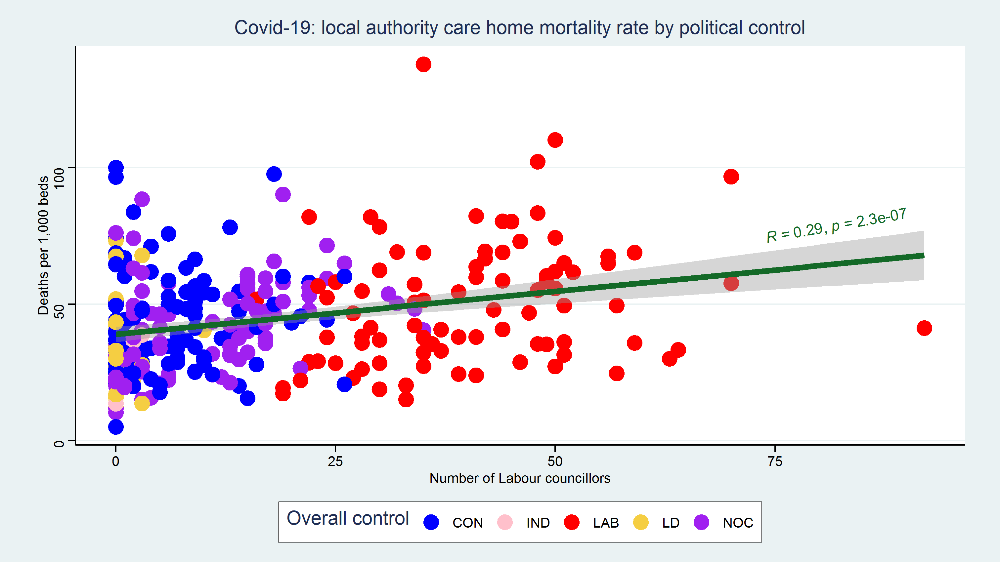
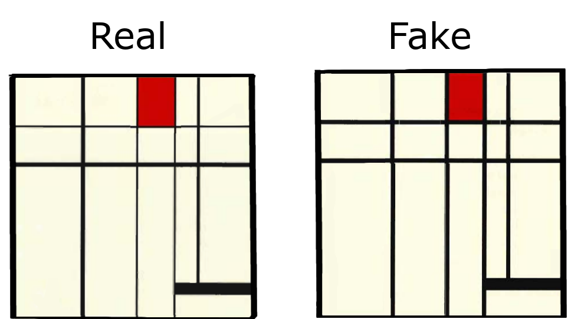
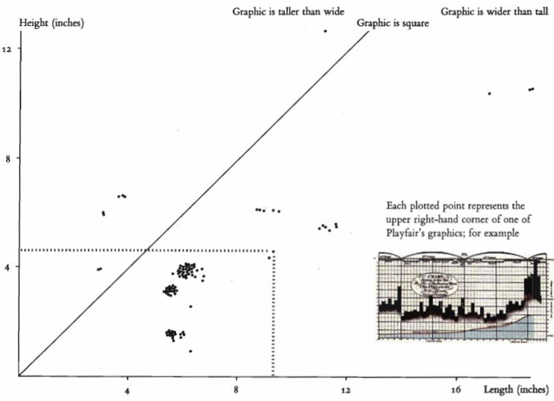

Plotting poetry Beyond a grammar of graphics
Why is this important?
- Communicating on paper.
- Communicating on screen.
- Not: exploratory data analysis.
Communicating on screen
- Can we learn lessons from the local authorities which have had fewer Covid deaths for older people?
- It's not that simple.
- How to communicate this?
Preliminary: not to be shared
Outline
- A grammar of graphics.
- What is poetry?
- What is graphical poetry?
A grammar of graphics is a tool that enables us to concisely describe the components of a graphic.
Such a grammar allows us to move beyond named graphics (e.g., the “scatterplot”) and gain insight into the deep structure that underlies statistical graphics.
Wickham, H., 2010. A layered grammar of graphics.
Journal of Computational and Graphical Statistics, 19(1), pp.3-28.
What is a grammar of graphics?
- Data
- Mapping
- Geometric transformations
- Statistical transformations
- Scale
- Coordinates
- Facets
Data: 2020
Discrete
Preliminary: not to be shared
Preliminary: not to be shared
Grammar tells us what words make up our graphical “sentences”, but offers no advice on how to write well.How can we build on top of the grammar to help data analysts build compelling, revealing graphics?
What would a poetry of graphics look like?
Wickham, H., 2010. A layered grammar of graphics. Journal of Computational and Graphical Statistics, 19(1), pp.3-28.
What is poetry?
A good poem helps to change the shape and significance of the universe; helps to extend everyone’s knowledge of himself and the world around him.
Dylan Thomas
On beauty
Beauty is truth, truth beauty,—that is all
Ye know on earth, and all ye need to know.
Keats, John. Ode on a Grecian urn (1819).
What is poetry?
| Beauty | |||
|---|---|---|---|
Truth |
0 | 1 | |
| 0 |  |
Rhetoric | |
| 1 | Prose | Poetry | |
Application to plotting
- What makes a plot true?
- What makes a plot beautiful?
Is accuracy sufficient for truth?
- Inaccurate plots
- Suppressio veri
- Suggestio falsi
A true plot?
- Suppressio veri: overplotting
- Suggestio falsi: regression line
- Plot is not just a collection of data
In composing the Odyssey he did not include all the adventures of Odysseus—such as his wound on Parnassus, or his feigned madness at the mustering of the host—incidents between which there was no necessary or probable connection;
but he made the Odyssey, and likewise the Iliad, to centre round an action that in our sense of the word is one.
Aristotle. Aristotle's Poetics. New York: Hill and Wang, 1961.
Beauty

- Spence, Ian. "William Playfair and the psychology of graphs." In Proceedings of the American Statistical Association, Section on Statistical Graphics, pp. 2426-2436. 2006.
- Four colours max
- Line weight
- 
- Aspect ratio
- Labels next to lines
- Log scale
Aspect ratio
- Edward Tufte,The Visual Display of Quantitative Information Cheshire, Conn. :Graphics Press, 2001
Plotting packages
- R: ggplot2
- R: PerformanceAnalytics
- R: Leaflet
- Python: Seaborn
- Python: Plotly Express
Github
https://github.com/samrickman/plotting-poetry